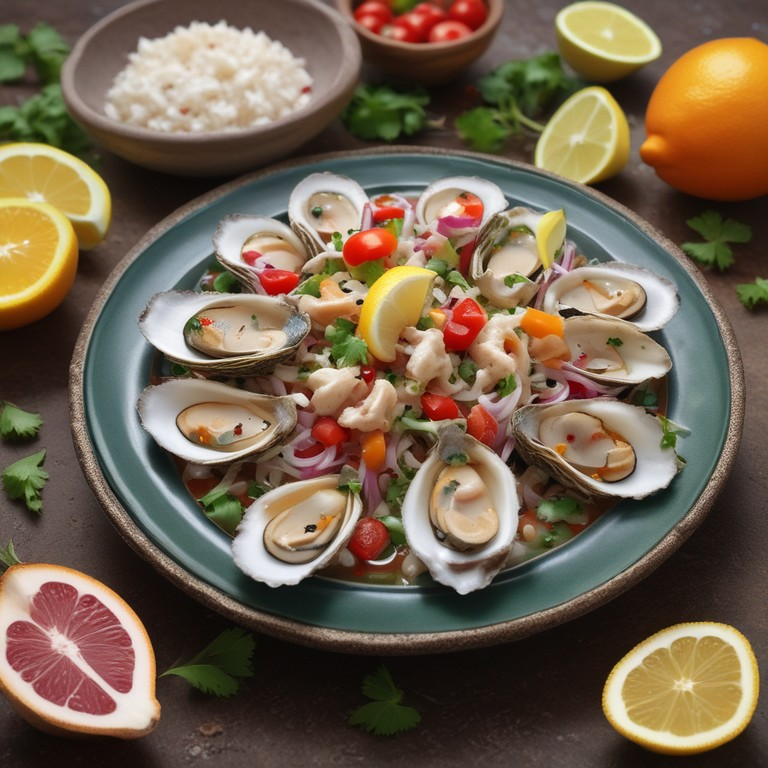
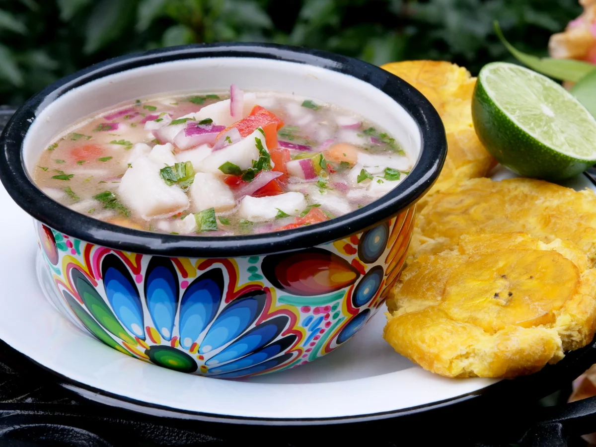
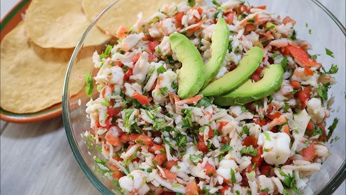
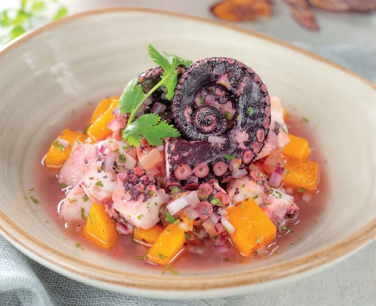

Nuestros Platos

Ceviche de Camaron

Encebollado

Bolón de Verde
Tigrillo
Crema de Cangrejo

Ceviche oscuro y sabroso de conchas frescas, ideal para los amantes de los mariscos.
Ceviche de Concha

Pescado fresco en jugo de limón con cebolla, tomate y cilantro, un clásico refrescante y lleno de sabor.
Ceviche de Pescado

Exquisito ceviche de cangrejo fresco, marinado en limón y mezclado con cebolla, tomate y cilantro.
Ceviche de Cangrejo

Tierno pulpo marinado en limón y acompañado de cebolla y hierbas frescas para un toque único de mar.